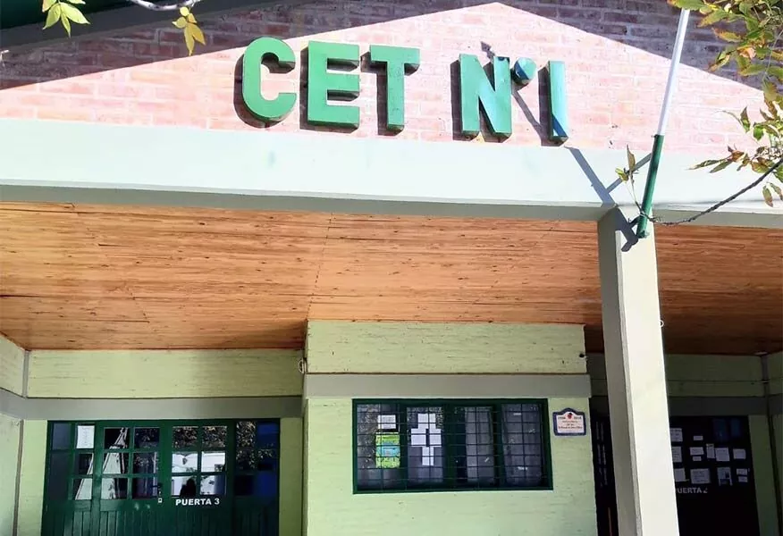
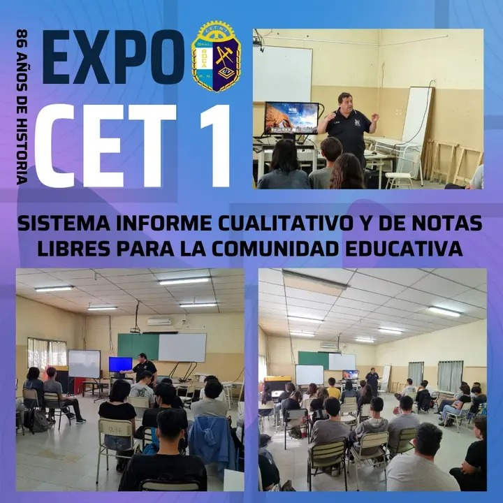
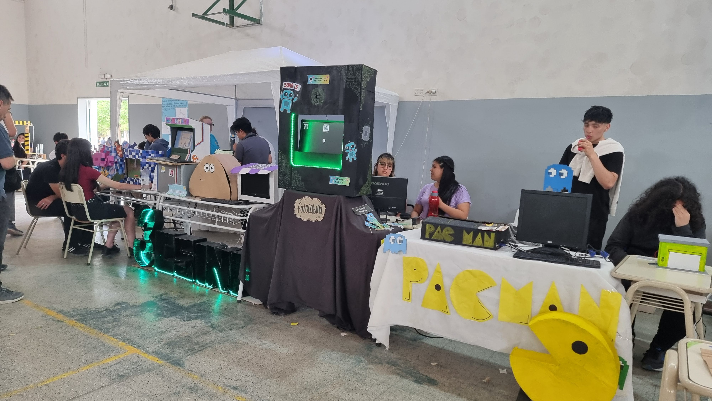

CET N°1
"Don Antonio Sánchez Platero"
General Roca - Río Negro
CENTRO DE
|

|
PROYECTOS |
CHARLA TECNOLÓGICA INNOVADORADescubre los proyectos que están revolucionando la educación y la salud
👨💻 Realizada por el experto en TIC y programación Guillermo Lapettina de la ciudad Choele Choel.
📌 Primera charla:
Dedicada al sistema de informes cualitativos aplicado en la E.S.R.N. 16 y CET N°2, el cual facilita tanto la tarea docente como las cuestiones técnicas, optimizando procesos y mejorando la comunicación educativa.
📌 Segunda charla:
Trató sobre el proyecto realizado con el CENS N°14 y el personal de hemoterapia del hospital de Choele Choel, implementando un sistema innovador para registrar y clasificar donantes de sangre, mejorando la eficiencia en procesos críticos de salud.

|
CABINA FOTOGRÁFICA INNOVADORADonde la creatividad estudiantil se encuentra con la tecnología profesional 👨🎓👩🎓 Realizado por los talentosos estudiantes de 3°1°C.S y 3°2°C.S ✨ Proyecto innovador: Recreación de una cabina de fotos profesional, combinando:
🏆 Destacado éxito en la Expo ENET 2024 del CET N°1 por su innovación, calidad profesional y ejecución impecable.

|
Izquierdo Milagros
Desarrolladora
Goroso Zamir
Desarrollador
Loncoman Abigail
Desarrolladora